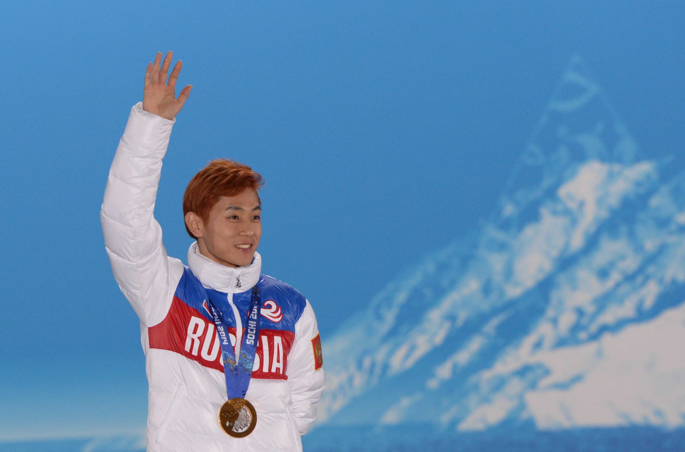

Шорт-трек
Победитель: Виктор Ан
Россиянин Виктор Ан выиграл золотую медаль Олимпиады-2014 в Сочи на дистанции 500 м. 15 февраля он одержал победу в олимпийском финале на дистанции 1000 метров. Таким образом, Ан стал пятикратным олимпийским чемпионом – первым в истории шорт-трека. Он выиграл все четыре дисциплины – 500 м, 1000 м, 1500 м и эстафету 5000 м. На двух первых дистанциях – в Сочи за Россию, на трех последних – с Кореей в Турине-2006.